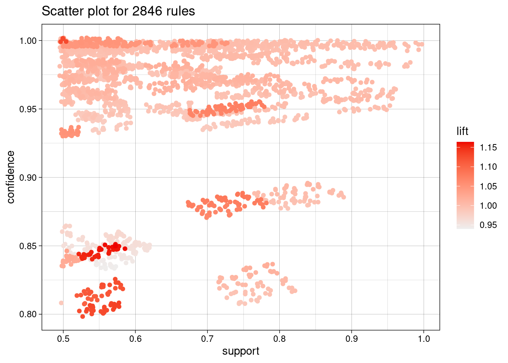

A menudo nos encontramos con conjuntos de datos complejos que contienen una gran cantidad de información valiosa. Sin embargo, entre las vastas filas y columnas de números y atributos, a menudo se esconden patrones y relaciones que no son evidentes a simple vista. Aquí es donde entran en juego las reglas de asociación: una potente técnica de minería de datos que nos permite descubrir conexiones ocultas y asociaciones significativas entre los elementos de nuestros datos.
Las reglas de asociación nos permiten identificar patrones frecuentes, revelar relaciones interesantes y descubrir insights que de otro modo podrían pasar desapercibidos. Desde la cesta de la compra en el supermercado hasta el comportamiento del usuario en sitios web, las reglas de asociación han demostrado ser invaluable para comprender el comportamiento humano y las relaciones entre los elementos. Algunas de las aplicaciones más reconocidas dentro de este mundo son marketing y ventas, análisis de cestas de compra (Market Basket Analysis), recomendación de productos, etc.
Para sumergirnos de lleno en reglas de asociación, como no podía ser de otra manera haremos uso de arules, que nos ofrece un conjunto diverso de herramientas para desentrañar los secretos de nuestros datos y obtener insights accionables para la toma de decisiones. Con más de 25000 descargas mensuales, Michael Hahsler logró desarrollar un extenso paquete que hoy en día es usado en numerosas herramientas de Data Mining. Si él nos hizo el favor de crearlo, nosotros nos vemos en la obligación de darle uso.
library(arules)
Loading required package: Matrix
Attaching package: 'arules'
The following objects are masked from 'package:base':
abbreviate, write
# Como es costumbre, cargamos el datasetlibrary(readr)train <-read_csv("datasets/train.csv")
Rows: 576 Columns: 12
── Column specification ────────────────────────────────────────────────────────
Delimiter: ","
dbl (12): profile pic, nums/length username, fullname words, nums/length ful...
ℹ Use `spec()` to retrieve the full column specification for this data.
ℹ Specify the column types or set `show_col_types = FALSE` to quiet this message.
test <-read_csv("datasets/test.csv")
Rows: 120 Columns: 12
── Column specification ────────────────────────────────────────────────────────
Delimiter: ","
dbl (12): profile pic, nums/length username, fullname words, nums/length ful...
ℹ Use `spec()` to retrieve the full column specification for this data.
ℹ Specify the column types or set `show_col_types = FALSE` to quiet this message.
all_data <-rbind(train, test)
Sin embargo, ahora nos encontramos con un problema, y es que arules y su algoritmos están diseñados para trabajar con datos categóricos o binarios. Si los datos son continuos, como los números enteros o flotantes, es necesario discretizarlos en rangos o categorías. Por ello, debemos de hacer uso de cut(), para convertir cada atributo de nuestro dataset en uno discretizado…
Una vez hemos discretizado cada una de las variables o atributos que componen nuestro dataset, con as(transactions) pasamos el conjunto total de datos a transacciones, para poder trabajar con reglas de asociación.
Una vez hemos preparado nuestro conjunto de datos, ya podemos pasar a identificar patrones frecuentes, revelar relaciones interesantes y descubrir insights. Para ello, el trabajo con arules se hace muy sencilla. Usando simplemente la función apriori pasándole por parámetro el sesgo de confianza y soporte que queremos para las reglas, podemos obtenerlas de manera rápida y sencilla. Un poco de la matemática que hay de fondo en apriori…
El soporte de un conjunto de elementos \(X\), denotado como \(Sop(X)\), se define como la proporción de filas en un conjunto de datos \(D\) que contienen todos los elementos de \(X\). Matemáticamente, se expresa como:
\[
\text{Sop}(X) = \frac{|X|}{|D|}
\]
La confianza de una regla de asociación \(( X \rightarrow Y )\), denotada como \(\text{Conf}(X \rightarrow Y)\), se define como la proporción de filas en un conjunto de datos \(( D )\) que contienen tanto \(( X )\) como \(( Y )\), en relación con las filas que contienen \(( X )\). Matemáticamente, se expresa como:
Aunque resulte extraño, algunas de las reglas que se nos han generado (concretamente las 8 primeras), presentan el conjunto vacío a la izquierda, pero no hay por qué asustarse. Esto podría ser solucionado simplemente añadiendo un parámetro más a parameter, que sería minlen = 2. Sin embargo, ni siquiera es necesario porque las reglas que contienen lhs vacío (parte izquierda), son igualmente útiles porque identifican patrones de comportamiento o relaciones entre elementos que ocurren de forma independiente de otros elementos. Esto significa que estas reglas capturan asociaciones fuertes entre un elemento o atributo y otro, sin depender de la presencia o ausencia de otros elementos.
Si quiseramos hacer un resumen cuantitativo de las reglas que hemos extraido en el paso anterior, podríamos usar summary().
summary(reglas)
set of 2846 rules
rule length distribution (lhs + rhs):sizes
1 2 3 4 5 6 7 8
8 82 328 704 863 604 222 35
Min. 1st Qu. Median Mean 3rd Qu. Max.
1.00 4.00 5.00 4.83 6.00 8.00
summary of quality measures:
support confidence coverage lift
Min. :0.5000 Min. :0.8000 Min. :0.5000 Min. :0.9400
1st Qu.:0.5460 1st Qu.:0.9487 1st Qu.:0.5690 1st Qu.:0.9974
Median :0.6164 Median :0.9744 Median :0.6695 Median :1.0007
Mean :0.6515 Mean :0.9568 Mean :0.6827 Mean :1.0094
3rd Qu.:0.7381 3rd Qu.:0.9945 3rd Qu.:0.7716 3rd Qu.:1.0095
Max. :0.9971 Max. :1.0000 Max. :1.0000 Max. :1.1637
count
Min. :348.0
1st Qu.:380.0
Median :429.0
Mean :453.4
3rd Qu.:513.8
Max. :694.0
mining info:
data ntransactions support confidence
all_data_transactions 696 0.5 0.8
call
apriori(data = all_data_transactions, parameter = list(supp = 0.5, conf = 0.8))
Donde podemos ver que el output muestra un conjunto de 2846 reglas de asociación. La distribución de la longitud de las reglas revela que la mayoría tienen entre 4 y 6 elementos. Las medidas de calidad incluyen soporte, confianza, cobertura y lift, proporcionando información sobre la frecuencia y fiabilidad de las reglas. El conteo máximo indica que la regla más frecuente se observó en 694 transacciones.
Podemos pasar ahora a mostrar ejemplos simples de usos del paquete arules. Podemos empezar con las funciones que nos permiten quedarnos con la parte izquierda y derecha de las reglas que queramos.
Una manera util de ver todo lo que se puede hacer con un determinado objeto en R, es usar str(objeto). Esto nos produce un output con todos los atributos y metodos de dicho objeto (como en programación orientada a objetos). Por ejemplo, si quisieramos saber qué podemos hacer con el conjunto de reglas que hemos extraido anteriormente…
Arules también nos permite realizar un detallado filtrado sobre un conjunto de reglas. Esto es útil en muchas ocasiones. Por ejemplo, imaginemosno que tenemos un dataset que hemos convertido a transactions y que corresponden a compras que se han realizado en Mercadona. Quizás, el jefe está interesado en conocer que relaciones existen en las compras de los clientes, y para ello manda a sus ingenieros a qué hagan uso de arules para extraer conocimiento. Concretamente, los especialistas usarán subset. La manera de usarlo es:
Se queda con reglas que en la izquierda contienen “private=”, sin especificar si es si o no. (por ello es un partial matching).
Si quisieramos ver visualmente las reglas con las que estamos trabajando…
library(arulesViz)plot(reglas)
To reduce overplotting, jitter is added! Use jitter = 0 to prevent jitter.

Y si quisieramos que el gráfico fuera interactivo…
#Ejecutar en vuestro ordenadorplot(reglas, engine ="htmlwidget")
Warning: Too many rules supplied. Only plotting the best 1000 using 'lift'
(change control parameter max if needed).
To reduce overplotting, jitter is added! Use jitter = 0 to prevent jitter.
Vamos a probar ahora a ordenar nuestro conjunto de reglas. El support de una regla de asociación indica la frecuencia con la que se observan todos los elementos de la regla en el conjunto de datos. Cuanto mayor sea el support, más común es la regla en los datos. La confianza de una regla indica la probabilidad de que el consecuente ocurra dado que el antecedente está presente. Cuanto mayor sea la confianza, más fuerte es la relación entre el antecedente y el consecuente.
Si quisieramos ordenar por tanto, nuestra reglas, algunos ejemplos de ello serían:
reglasOrdSup <-sort(reglas, by ="support")inspect(reglasOrdSup[1:10])
Las reglas que hemos almacenado en reglasOrdConf están ordenadas por confianza, lo cual nos da realmente juego a la hora de extraer información y relaciones ocultas en nuestro dataset. Hemos hecho inspect de las 10 primeras pero, ¿por qué no quedarnos directamente con todas las reglas de nuestro conjunto que tengan confidence igual a 1, por ejemeplo?
Se trata de reglas con confianza máxima. Una confianza de 1 en una regla de asociación significa que el consecuente de la regla siempre ocurre cuando el antecedente está presente en el conjunto de datos. En otras palabras, la confianza del 100% indica una relación perfecta entre el antecedente y el consecuente, lo que significa que cada vez que se cumple el antecedente, también se cumple el consecuente sin excepción. Vamos a extraer conocimiento de dichas reglas.
Estas 3 reglas que hemos encontrado nos indican según su confianza que SIEMPRE que la cuenta que estamos tratando es fake, dicha cuenta ni tendrá URL externa, sus seguidores serán un número bajo y tendrá pocas publicaciones compartidas en su cuenta.
Las 4 reglas obtenidas nos muestran como, cuando la cuenta que estamos tratando o de la cual se quiera extraer conocimiento presente una cuenta sin URL existente y que sea falsa, estamos seguros que sus seguidores serán bajos y sus publicaciones también.
Vamos a tratar de encontrar si alguna de las reglas de las cuales partiamos tenía el “atributo inferencia” “fake” en su parte derecha, lo cual sería realmente útil ya que serían reglas que nos daría conocimiento de una serie de premisas que nos llevarían a decidir si la cuenta es fake o verdadera con una cierta confianza.
subset(reglas,subset = rhs %pin%"fake=")
set of 0 rules
Como se puede ver en el ouput del chunk, no se encuentra ninguna regla. Podemos probar a generar reglas de nuevo, esta vez tratando de proporcionar parámetros menos restrictivos…
Si vamos un paso más alla, podemos ser curiosos y fijarnos en las 2 primeras reglas que se nos generan. Dicen que se parte de {} y se llega a “fake=No” y “fake=Si” respectivamente, cada una de ellas con una confianza de 0,5. Por la definición de confianza, sabemos que es el porcentaje con el cual la parte se da en el caso en el que se de la parte izquierda, y si pensamos en el número de samples que tenian los valores de “fake” tiene sentido:
knitr::kable(table(all_data$fake))
Var1
Freq
0
348
1
348
Volviendo al resto de reglas sin tener en cuenta las 2 primeras, las reglas 3, 4, y 5 sugieren que ciertos atributos como la ausencia de URL externa, un número bajo de seguidores o un número bajo de publicaciones están asociados con una alta probabilidad de que la cuenta sea falsa (“fake=Sí”), el resto son similares. Si nos fijamos, solo existe una única regla con respecto a la presencia de cuentas verdaderas de Instagram. Se trata de de aquellas cuentas que presentan nums/length fullname=Bajo. Como ya hemos comentado a lo largo del book, es algo que ya conocíamos.
Concluimos así nuestra inmersión en el mundo de las reglas de asociación, donde hemos explorado cómo estas nos permiten descubrir patrones ocultos en nuestros datos, revelando relaciones significativas entre diferentes variables. A través de herramientas como arules, hemos desentrañado los secretos de nuestros conjuntos de datos y hemos obtenido insights valiosos para la toma de decisiones. Ahora nos adentramos en FCA (Análisis de Conceptos Formales por sus siglas en ingles), una potente técnica nos permite explorar las relaciones entre conjuntos de datos desde una perspectiva diferente, centrada en la estructura de conceptos y la jerarquía de atributos.